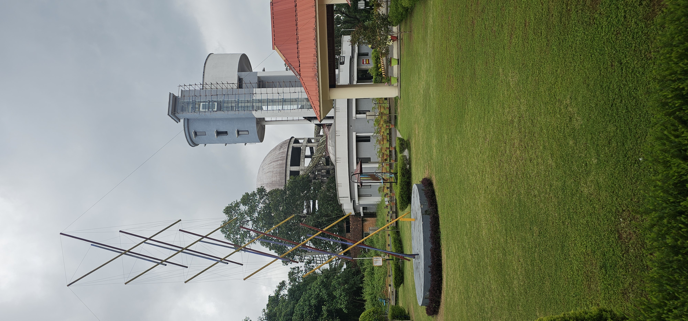

Welcome to Kerala Science City Kottayam, a state-of-the-art interactive space in Kuravilangad exploring the frontiers of science, engineering, and technology. ശാസ്ത്രത്തിന്റെയും സാങ്കേതികവിദ്യയുടെയും വിസ്മയങ്ങൾ തൊട്ടറിയാൻ കുറുപ്പന്തറയ്ക്കടുത്ത് കോഴയിൽ ഒരുക്കിയിരിക്കുന്ന കേരള സയൻസ് സിറ്റിയിലേക്ക് സ്വാഗതം.
Kerala Science City Kottayam has been conceptualized, designed, and developed by the National Council of Science Museums (NCSM), Ministry of Culture, Govt. of India, in active collaboration with the Kerala State Science & Technology Museum (KSSTM).
Spanning over a lush 30-acre campus in Kuravilangad (Kottayam), this landmark facility integrates outdoor nature pathways with scientific experiments, bringing textbooks to life through tactile interaction and immersive multimedia.
കേരള ശാസ്ത്ര സാങ്കേതിക മ്യൂസിയത്തിന്റെ (KSSTM) മേൽനോട്ടത്തിൽ, കേന്ദ്ര സാംസ്കാരിക മന്ത്രാലയത്തിന് കീഴിലുള്ള നാഷണൽ കൗൺസിൽ ഓഫ് സയൻസ് മ്യൂസിയംസ് (NCSM) രൂപകൽപ്പന ചെയ്ത ദക്ഷിണേന്ത്യയിലെ ഏറ്റവും മികച്ച ശാസ്ത്ര വിനോദ വിജ്ഞാന കേന്ദ്രമാണ് കോട്ടയം കോഴയിലുള്ള കേരള സയൻസ് സിറ്റി.
പ്രകൃതിഭംഗി തുളുമ്പുന്ന 30 ഏക്കർ വിസ്തൃതിയിലാണ് ഈ ശാസ്ത്ര നഗരം സ്ഥിതി ചെയ്യുന്നത്. ശാസ്ത്രതത്വങ്ങൾ സ്വയം പരീക്ഷിച്ച് ബോധ്യപ്പെടാൻ സഹായിക്കുന്ന 80-ലധികം ശാസ്ത്ര ഉപകരണങ്ങൾ, 3D വിജ്ഞാന തിയേറ്റർ, വംശനാശം സംഭവിച്ച ഭീമാകാരങ്ങളായ ദിനോസറുകളുടെ മാതൃകകൾ അടങ്ങിയ പാർക്ക് എന്നിവ ആദ്യഘട്ടത്തിൽ ഇവിടെ ലഭ്യമാക്കിയിട്ടുണ്ട്.

Explore the interactive wings within the Science City designed to spark questions and unleash creativity. കുട്ടികൾക്കും മുതിർന്നവർക്കും ഒരുപോലെ വിജ്ഞാനവും വിനോദവും നൽകുന്ന പ്രധാന ഗ്യാലറികൾ താഴെ പറയുന്നവയാണ്.
 Indoorഇൻഡോർ
Indoorഇൻഡോർ
Where physics rules become play and mathematics comes alive! Interactive hands-on installations and mirrors.
ഭൗതികശാസ്ത്ര നിയമങ്ങളും ഗണിതശാസ്ത്ര സമവാക്യങ്ങളും കളികളിലൂടെയും പരീക്ഷണങ്ങളിലൂടെയും കുട്ടികൾക്ക് സ്വയം മനസ്സിലാക്കാൻ കഴിയുന്ന ഗാലറി.
Read Moreകൂടുതൽ വായിക്കൂ Indoorഇൻഡോർ
Indoorഇൻഡോർ
Explore space mission controls, micro-robotics workbenches, microchips, and interactive AI logic modules.
നൂതന സാങ്കേതികവിദ്യകളായ റോബോട്ടിക്സ്, ബഹിരാകാശ ദൗത്യങ്ങൾ, ആർട്ടിഫിഷ്യൽ ഇന്റലിജൻസ് എന്നിവ പരിചയപ്പെടുത്തുന്ന ഗാലറി.
Read Moreകൂടുതൽ വായിക്കൂ Indoorഇൻഡോർ
Indoorഇൻഡോർ
Walk through a dry marine aquarium studying Antarctic ecosystems, deep ocean zones, and polar research missions.
ആന്റാർട്ടിക് പരിസ്ഥിതി വ്യവസ്ഥകൾ, ആഴക്കടലിലെ ജീവജാലങ്ങൾ, സമുദ്ര ഗവേഷണം എന്നിവയുടെ വിവരങ്ങൾ അടങ്ങിയ ഗാലറി.
Read Moreകൂടുതൽ വായിക്കൂ Indoorഇൻഡോർ
Indoorഇൻഡോർ
Experience science in action on a multi-dimensional screen. Advanced 3D surround sound theatre system.
ഉയർന്ന റെസല്യൂഷൻ ഉള്ള ത്രിമാന പ്രൊജക്ഷൻ സംവിധാനവും സറൗണ്ട് സൗണ്ടും ഒത്തുചേരുന്ന തിയേറ്റർ അനുഭവം.
Read Moreകൂടുതൽ വായിക്കൂ
Outdoorഔട്ട്ഡോർOpen-air mechanical swings, pulleys, gear levers, and echo tubes that make physics concepts fun to play.
നമുക്ക് ചുറ്റുമുള്ള ഭൗതികശാസ്ത്ര തത്വങ്ങൾ കളിയിലൂടെ നേരിട്ട് അനുഭവിച്ചറിയാൻ സഹായിക്കുന്ന ഔട്ട്ഡോർ പാർക്ക്.
Read Moreകൂടുതൽ വായിക്കൂ Outdoorഔട്ട്ഡോർ
Outdoorഔട്ട്ഡോർ
Walk among highly realistic animatronic models of dinosaurs nestled in simulated prehistoric flora.
പ്രകൃതിദത്തമായ കാടിന്റെ പശ്ചാത്തലത്തിൽ നിർമ്മിച്ചിട്ടുള്ള യഥാർത്ഥ വലുപ്പത്തിലുള്ള ഡൈനോസറുകളുടെ മാതൃകകൾ.
Read Moreകൂടുതൽ വായിക്കൂ Tinkeringടിങ്കറിങ്
Tinkeringടിങ്കറിങ്
Hands-on learning corner equipped with microcontroller boards, chemistry experiment facilities, and microscopes.
വിദ്യാർത്ഥികൾക്കായി ഒരുക്കിയിരിക്കുന്ന ശാസ്ത്ര പരീക്ഷണശാലയും ടിങ്കറിങ് ഉപകരണങ്ങളും അടങ്ങുന്ന മുറി.
Read Moreകൂടുതൽ വായിക്കൂ Tinkeringകളിക്കളം
Tinkeringകളിക്കളം
A custom assembly block space for toddlers to experience soft climbing blocks and basic color-mixing wheels.
ചെറിയ കുട്ടികൾക്കായി സുരക്ഷിതമായി നിർമ്മിച്ചിട്ടുള്ള കളിക്കളവും ലളിതമായ പരീക്ഷണങ്ങളും.
Read Moreകൂടുതൽ വായിക്കൂMeet leading researchers and discuss recent space programs and advancements. പ്രമുഖ ശാസ്ത്രജ്ഞരുമായി സംവദിക്കാനും ബഹിരാകാശ ഗവേഷണങ്ങളെക്കുറിച്ചറിയാനും അവസരം.
More Detailsകൂടുതൽ വിവരങ്ങൾSpecial shadow measurements and planetarium shows marking the longest day. വർഷത്തിലെ ഏറ്റവും നീളം കൂടിയ പകലിനെ അടയാളപ്പെടുത്തി നിഴൽ പരീക്ഷണങ്ങൾ.
More Detailsകൂടുതൽ വിവരങ്ങൾ